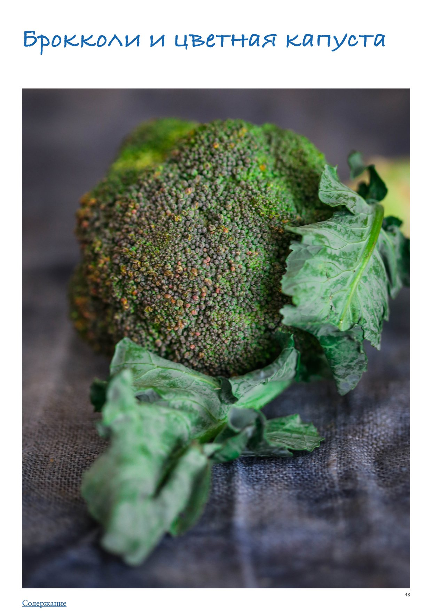

<!DOCTYPE html>
<html lang="en">
<head>
<meta charset="UTF-8">
<meta name="viewport" content="width=device-width, initial-scale=1.0">
<title>Брокколи и цветная капуста</title>
<style>
  * { box-sizing: border-box; margin: 0; padding: 0; }
  body { font-family: -apple-system, BlinkMacSystemFont, 'Segoe UI', Roboto, sans-serif;
         background: #faf7f4; color: #2d2926; max-width: 680px; margin: 0 auto; padding-bottom: 40px; }

  .photo-wrap img { width: 100%; max-height: 380px; object-fit: cover; object-position: center center; display: block; }

  .header { padding: 24px 24px 16px; }
  h1 { font-size: 26px; font-weight: 700; line-height: 1.2; margin-bottom: 10px; color: #1a1714; }
  .meta { font-size: 13px; color: #9a8a80; margin-bottom: 6px; }
  .rating { display: inline-block; background: #fff3e6; color: #c05f2a;
             font-size: 13px; font-weight: 600; padding: 3px 10px; border-radius: 20px; margin-bottom: 8px; }
  .source { font-size: 12px; color: #b0a09a; margin-top: 4px; }

  .info-bar { font-size: 13px; color: #5a4a3a; margin: 6px 0 4px; }

  .section { padding: 0 24px; margin-bottom: 24px; }
  .section-title { font-size: 15px; font-weight: 700; color: #7a4f2a;
                    text-transform: uppercase; letter-spacing: 0.6px;
                    margin-bottom: 12px; display: flex; align-items: center; gap: 8px; }
  .section-icon { font-size: 17px; }

  .subsection-title { font-size: 15px; font-weight: 700; color: #3a2a1a;
                       margin: 24px 0 10px; padding-bottom: 5px;
                       border-bottom: 2px solid #e8d5b8; }
  .ingr-subheader { font-size: 13px; font-weight: 700; text-transform: uppercase;
                     letter-spacing: 0.5px; color: #8a6a3a; margin: 14px 0 4px; }
  .ingr-list { list-style: none; display: flex; flex-direction: column; gap: 8px; }
  .ingr-list li { font-size: 15px; line-height: 1.5; padding: 8px 12px;
                   background: white; border-radius: 8px;
                   border-left: 3px solid #f0c080; }
  .qty { font-weight: 600; color: #c05f2a; }

  .steps { list-style: none; counter-reset: steps; display: flex; flex-direction: column; gap: 12px; }
  .steps li { font-size: 15px; line-height: 1.6; padding: 12px 14px 12px 48px;
               background: white; border-radius: 10px; position: relative; }
  .steps li::before { counter-increment: steps; content: counter(steps);
                       position: absolute; left: 12px; top: 12px;
                       width: 26px; height: 26px; background: #f0c080;
                       border-radius: 50%; display: flex; align-items: center;
                       justify-content: center; font-weight: 700; font-size: 13px; color: #7a4f2a; }

  .notes-list { list-style: disc; padding-left: 20px; margin: 0; }
  .notes-list li { font-size: 15px; line-height: 1.6; color: #2d2926; }

  .my-notes-section { margin-top: 8px; }
  .my-notes-box { background: #fffef5; border: 1.5px dashed #c8b870; border-radius: 12px;
                  padding: 14px 18px; font-size: 14px; line-height: 1.7; color: #5a4a30; }
  .my-notes-box p { margin-bottom: 6px; }
  .my-notes-box p:last-child { margin-bottom: 0; }
  .empty-note { color: #c0b090; font-style: italic; }

  .recipe-table { width: 100%; border-collapse: collapse; margin: 4px 0 12px; font-size: 14px; }
  .recipe-table th { background: #f5ede4; color: #7a4a28; padding: 8px 12px;
                      text-align: left; border: 1px solid #e0cfc0; font-weight: 700; }
  .recipe-table td { padding: 8px 12px; border: 1px solid #e8ddd5; vertical-align: top;
                      line-height: 1.5; }
  .recipe-table tr:nth-child(even) td { background: #fdf8f5; }

  p.para { font-size: 15px; line-height: 1.65; color: #2d2926; margin-bottom: 12px; }
  p.para:last-child { margin-bottom: 0; }

  .inline-photo { margin: 16px 0; border-radius: 10px; overflow: hidden; }
  .inline-photo img { width: 100%; max-height: 320px; object-fit: cover; object-position: center center; display: block; }
  .inline-photo.portrait { display: flex; flex-direction: column; align-items: center; background: transparent; }
  .inline-photo.portrait img { width: auto; max-width: 55%; max-height: none; object-fit: contain; border-radius: 10px; }
  .inline-photo.portrait figcaption { width: 55%; text-align: center; }
  .inline-photo figcaption { font-size: 12px; color: #9a8a80; padding: 6px 10px;
                               background: #f5f0eb; font-style: italic; }
  .inline-video { margin: 16px 0; border-radius: 10px; overflow: hidden; background: #000; }
  .inline-video video { width: 100%; max-height: 400px; display: block; }
  .inline-video figcaption { font-size: 12px; color: #9a8a80; padding: 6px 10px;
                               background: #f5f0eb; font-style: italic; }

  .related-section { font-size: 13px; margin-top: 8px; color: #9a8a80; }
  .related-label { font-weight: 600; color: #7a4f2a; }
  .related-link { color: #c05f2a; text-decoration: none; font-weight: 500; }
  .related-link:hover { text-decoration: underline; }

  .cooked-bar { font-size: 13px; margin-top: 10px; display: flex; flex-wrap: wrap; align-items: center; gap: 6px; }
  .cooked-label { font-weight: 600; color: #7a4f2a; }
  .cooked-chip { background: #f0ede6; color: #5a4a3a; padding: 3px 10px;
                  border-radius: 20px; font-size: 13px; border: 1px solid #d8cfc4; }

  .my-photo-wrap { margin: 24px 24px 0; border-radius: 12px; overflow: hidden;
                    border: 2px solid #e8d9c8; }
  .my-photo-label { background: #f5ede4; color: #7a4f2a; font-size: 12px; font-weight: 600;
                     padding: 6px 14px; letter-spacing: 0.4px; }
  .my-photo-wrap img { width: 100%; max-height: 420px; object-fit: cover;
                        object-position: center; display: block; }

  .back-btn { display: inline-flex; align-items: center; gap: 6px;
               margin: 28px 24px 20px;
               background: #c05f2a; color: white;
               font-size: 14px; font-weight: 600;
               padding: 8px 16px; border-radius: 20px;
               text-decoration: none; }
  .back-btn:hover { background: #a04e22; text-decoration: none; }

  @media (max-width: 480px) {
    h1 { font-size: 22px; }
    .steps li { padding-left: 42px; }
  }
</style>
</head>
<body>
  <a class="back-btn" href="../cookbook.html">← Catalog</a>
  <div class="photo-wrap"></div>
  <div class="header">
    
    <h1>Брокколи и цветная капуста</h1>
    <div class="meta">ПРАктика. Овощи</div>
    
    
    
    <div class="source">Source: ПРАктика. Овощи</div>
  </div>
  
  
        <div class="section">
          
          <p class="para">Брокколи и цветная капуста</p><p class="para">В большой и обширной семье капусты брокколи и ее разновидности, а также цветная капуста стоят особняком — из-за своей формы. В отличие от других видов капусты, у них не кочаны, а стебли с соцветиями. Такая форма предполагает совсем другие способы готовки, поэтому мы и выделили эти виды капусты отдельно. К тому же они настолько прекрасны, что явно достойны отдельной статьи. Сезон перечисленных ниже разновидностей цветной капусты и брокколи обычно начинается в середине лета и длится до осени, но прелесть этих неприхотливых и несложных в выращивании представительниц капустной семьи в том, что в продаже вы их можете найти круглый год. И, в отличие от тех же помидоров, не почувствуете особой разницы между сезонными и «внесезонными» по вкусу. Брокколи — плотные, компактные головки на довольно крупных в диаметре крепких стеблях. Этот овощ из экзотики давно стал привычным, брокколи круглый год можно найти практически в любом супермаркете. Наиболее распространена брокколи темно-зеленого цвета, реже встречается сорт с пурпурным оттенком. Вкус у брокколи спокойный, не слишком яркий, с приятными ореховыми нотами. Брокколини — длинные тонкие стебли с небольшими неплотными соцветиями похожи на миниатюрный сорт брокколи, но это не так. Брокколини — это гибрид обычной и китайской брокколи, который вывели азиатские селекционеры в 1990-х годах. Из-за своей формы брокколини готовится очень быстро, отличается нежным, сладковатым ореховым вкусом. Если кому-то из ваших родных или друзей не нравится брокколи, попробуйте предложить брокколини — обычно это срабатывает. Брокколи рааб (рапини) — длинные стебли с большим количеством листьев и малым — соцветий. На самом деле, эта капуста ближе к репе, чем к обычной брокколи. В Италии ее называют cime di rapa, в переводе «вершки репы». В отличие от брокколини, у брокколи рааб очень сильный, насыщенный и даже слегка агрессивный горько-сладковатый вкус, который при готовке смягчают с помощью соли и жира, например добавляя анчоусы или рыбный соус и много оливкового масла extra virgin. Брокколи рааб съедобна вся: стебли, листья и соцветия. Цветная капуста — компактная округлая головка с плотно сомкнутыми соцветиями на плотном стебле. Наиболее неприхотлива, а потому и распространена, белая цветная капуста, хотя есть сорта со светло-зелеными, желтыми и пурпурными соцветиями. Цветную капусту часто вводят в диетические рационы, так как она легко усваивается — в ней меньше клетчатки, чем в белокочанной, например. Но это вовсе не пресный «диетический» овощ — если правильно приготовить цветную капусту, она может быть настоящим деликатесом с насыщенным и богатым ореховым вкусом. Романеско — разновидность цветной капусты с необычным строением соцветий. Интересно, что форма головки романеско — настоящая «меча математика»: это фрактал, то есть сложная геометрическая форма, где каждая малая часть выглядит точно так же, как и большие части. Головка романеско состоит из мелких цветков, которые в свою очередь состоят из цветков поменьше точно такой же формы, а те — из еще более мелких, и все это эффектно закручено по спирали. Вкус у романеско, впрочем, совершенно не отличается от цветной капусты, а потому ее можно готовить по любому рецепту, рассчитанному на ее «ближайшую родственницу».</p>
        </div>
        <div class="section">
          <h2 class="section-title"><span class="section-icon">📌</span>Как выбирать</h2>
          <p class="para">Выбирайте брокколи с плотными, не рыхлыми головками, слегка бугристыми, без проросших отдельных соцветий и без желтизны. Цвет брокколи должен быть очень темным зеленым с синеватым (на грани цвета морской волны) или пурпурным отливом. Стебель крепкий, не гнется.</p><p class="para">Брокколини — стебли должны быть плотными, сочными, не сильно гнущимися. У соцветий допустим легкий желтый оттенок. Брокколи рааб — плотные стебли, темно-зеленые листья, без признаков желтизны. Цветная капуста или романеско должна быть крепкой, не вялой, с тугой и тяжелой головкой, без темных пятен. Мелкие темно-серые точки на поверхности не являются дефектом, это следы, оставленные солнцем. Если головка с листьями, они станут надежным индикатором свежести: чем более они упругие и сочные, тем лучше капуста.</p>
        </div>
        <div class="section">
          <h2 class="section-title"><span class="section-icon">📌</span>Как хранить</h2>
          <p class="para">Все перечисленные виды капусты хорошо хранятся в ящике для овощей холодильника, можно завернуть их в бумажные полотенца или положить в бумажный пакет, не плотно сворачивая, чтобы овощи могли дышать. Срок хранения — не менее недели. Цветную капусту, брокколи и их разновидности можно замораживать как в сыром, так и в готовом виде.</p>
        </div>
        <div class="section">
          <h2 class="section-title"><span class="section-icon">📌</span>Как чистить и нарезать</h2>
          <p class="para">У цветной капусты перед нарезанием нужно удалить листья. Брокколи и цветную капусту в рецептах обычно предлагается разобрать на соцветия. Для этого нужно отрезать стебель до места прикрепления нижних соцветий, разрезать головку пополам и руками или ножом разделить на соцветия нужного размера. Если капуста идет в суп или пюре, где не важна форма, можно просто срезать соцветия со всех сторон под углом, чтобы остался стебель с конусовидным кончиком. Чтобы нарезать головку цветной капусты на стейки, сначала нужно разрезать ее поперек пополам, затем отрезать от каждой половины параллельно сделанному разрезу стейк шириной около 2,5–3 см (в центре стейка будет стебель, держащий соцветия и сохраняющий целостность стейка). Оставшиеся боковые части приготовить другим способом. У брокколини достаточно отрезать нижнюю подсохшую часть стебля, а если соцветие крупное, разрезать пополам вдоль. Брокколи рааб используют целиком.</p>
        </div>
        <div class="section">
          <h2 class="section-title"><span class="section-icon">📌</span>Лайфхаки</h2>
          <ul class="notes-list"><li>Стебель брокколи не выбрасывайте: срежьте с него кожицу овощечисткой, нарежьте кружочками и используйте вместе с соцветиями или заморозьте и добавляйте в другие блюда. Можно приготовить их по моему простому рецепту (см. ниже).</li><li>В головки цветной капусты часто заползают мелкие насекомые, поэтому перед готовкой рекомендуется поместить ее целиком в соленую воду и выдержать 10 минут, чтобы насекомые всплыли.</li><li>Если вы купили цветную капусту с листьями, и листья свежие, без повреждений, не выбрасывайте их — приготовьте так же, как любую листовую капусту, например, слегка обжарьте с оливковым маслом, посолите, поперчите и сбрызните лимонным соком.</li></ul>
        </div>
        <div class="section">
          <h2 class="section-title"><span class="section-icon">📌</span>Как готовить</h2>
          <p class="para">Варка (бланширование) Соцветия брокколи и цветной капусты можно есть в сыром виде, поэтому рекомендуем и варить их не до мягкости, а всего пару минут (бланшировать), чтобы они остались хрустящими и лишь слегка смягчились. Для этого нужно довести до кипения подсоленную воду в кастрюле (воды должно быть столько, чтобы соцветия свободно в ней плавали), выложить разобранную на соцветия капусту и варить 1–3 минуты при слабом кипении. Затем сразу переложить в ледяную воду, чтобы остановить процесс готовки. Как солить воду для варки брокколи и цветной капусты Вода должна быть очень соленой. Стандартная практика — использовать 3% соли от объема воды. Например, для двух литров воды вам понадобится 60 граммов соли. Вас может это напугать, такое количество соли выглядит очень внушительно. Не бойтесь, брокколи возьмет ровно столько, сколько нужно, чтобы быть идеально просоленной. Все еще страшно? Начните с 2%. Жареная брокколи Разогреть в сковородке пару ложек оливкового масла, выложить соцветия брокколи (1 средняя головка) и жарить на средне-сильном огне, не помешивая, 1–2 минуты, до начала легкого подрумянивания снизу. Посолить, поперчить, перемешать, влить в сковородку 3 ст. л. воды, сразу накрыть крышкой и готовить еще 2 минуты. Готовая капуста должна остаться зеленой, не изменить цвет. Переложить на тарелку. По желанию сделать к капусте заправку: разогреть в той же сковородке 60–70 г сливочного масла, прогревать около 1,5 минут, до начала потемнения. Добавить мелко порубленную маленькую луковицу шалота и пару зубчиков чеснока, готовить, пока они не станут светло￾золотистыми, примерно 1 минуту. Посолить, поперчить, добавить 1,5 ч. л. лимонного сока и щепотку листочков тимьяна. Перемешать и полить капусту горячей заправкой. Стейки из цветной капусты Нарезать цветную капусту стейками, как описано выше. Посолить и пожарить на гриле или сковородке с оливковым или топленым маслом до золотистого цвета (можно запечь в духовке при 200 °С, посыпав любыми специями и сбрызнув оливковым маслом, в течение 15–20 минут). Рис из цветной капусты Измельчить соцветия цветной капусты в кухонном комбайне в крошку размером примерно с рисинки. Слегка обжарить на сковородке с топленым или оливковым маслом мелко порубленный лук, через пару минут добавить чеснок, готовить еще 1 минуту. Всыпать цветную капусту добавить специи по вкусу, посолить, поперчить и готовить на среднем огне, помешивая, около 5 минут до размягчения, но не полной мягкости капусты. Подавать в качестве гарнира. Пюре из цветной капусты Отварить крупно нарезанные соцветия цветной капусты в подсоленной воде до мягкости при прокалывании ножом, 10–12 минут. Слить воду, размять капусту в пюре (можно с помощью погружного блендера), заправить сливочным маслом и, по желанию, сливками или молоком. Посолить и поперчить.</p><p class="para">Цветная капуста, запеченная целиком Срезать у головки цветной капусты стебель и нижнюю часть соцветий. Посолить, поперчить, приправить специями по вкусу (сухой чеснок в гранулах, паприка, перец чили и т. п.), со всех сторон смазать оливковым маслом. Поместить капусту в чугунную кастрюлю срезом вверх, накрыть крышкой и запекать в разогретой до 220 °С духовке до размягчения, но не полного, около 30 минут. Затем достать кастрюлю, щипцами перевернуть капусту стеблем вниз и запекать без крышки еще около 10 минут до золотистой корочки.</p>
        </div>
        <div class="section">
          <h2 class="section-title"><span class="section-icon">📌</span>Вариант</h2>
          <p class="para">по желанию можно влить в кастрюлю 1 стакан домашнего томатного соуса, поместить</p><p class="para">на него капусту и слегка полить ее соусом перед запеканием. Сырые стебли брокколи Отрезать стебли у головок брокколи. Острым ножом срезать по 4 сторонам жесткую внешнюю часть толщиной 3–4 мм, чтобы получился квадратный в сечении брусок только из нежной светлой сердцевины (жесткие углы удобнее всего срезать овощечисткой). Полученные брусочки нарезать тонкими полосками (толщиной около 2 мм; можно на мандолине, но брусочки небольшие, поэтому не очень удобно, лучше просто острым ножом) и выложить на тарелку в один слой. Посыпать хорошей солью, желательно хлопьями, приправить свежемолотым черным перцем и сбрызнуть качественным оливковым маслом. Оставить минут на 5 и подавать.</p>
        </div>
        <div class="section">
          <h2 class="section-title"><span class="section-icon">🥣</span>Брокколи на пару с лимонной заправкой с кумином</h2>
          <ol class="steps"><li>на 4 порции 1 крупная головка брокколи соль для заправки 1/2 небольшой красной луковицы 3 ст. л. оливкового масла 1 ч. л. тертой цедры лимона 1 ч. л. сока лимона 1/2 ч. л. молотого кумина несколько капель острого соуса чили (по желанию)</li><li>Разобрать брокколи на средние соцветия, по желанию очистить и нарезать кружочками стебель.</li><li>Довести до кипения воду в пароварке или кастрюле со вставкой для варки на пару. Выложить брокколи, накрыть крышкой и готовить около 5 минут. Капуста должна остаться темно￾зеленой и слегка хрустящей.</li><li>Для заправки лук мелко порубить и смешать с остальными ингредиентами.</li><li>Готовую капусту переложить в миску, полить заправкой, посолить и перемешать. Подавать брокколи теплой или комнатной температуры.</li></ol>
        </div>
        <div class="section">
          <h2 class="section-title"><span class="section-icon">📌</span>Вариант</h2>
          <p class="para">вместо лимонной заправки можно сделать бальзамическую с оливками, смешав горсть</p>
        </div>
        <div class="section">
          <h2 class="section-title"><span class="section-icon">📌</span>мелко порубленных оливок, 4–5 ст. л. оливкового масла, 2 ч. л. качественного бальзамического</h2>
          <p class="para">уксуса, 2 ч. л. красного винного уксуса, щепотку хлопьев перца чили по желанию и щепотку соли.</p>
        </div>
        <div class="section">
          <h2 class="section-title"><span class="section-icon">📌</span>Брокколини с имбирем и медом</h2>
          <ol class="steps"><li>на 2 порции 400 г брокколини 40 г сливочного масла 2 ч. л. тертого свежего имбиря 1/2 ч. л. тертой цедры лимона 1/2 ч. л. меда соль, свежемолотый черный перец</li><li>Если стебли брокколини толстые (более 1 см в диаметре), разрезать их пополам вдоль, затем поперек. Если меньше, то разрезать их просто поперек пополам. Если стебли совсем тонкие, можно оставить целыми.</li><li>В сковородке довести до кипения 1/3 стакана воды. Выложить брокколини, посолить, накрыть крышкой и готовить 2 минуты на средне-слабом огне. Затем перемешать брокколини и готовить еще 3–5 минут. Снять крышку и полностью выпарить оставшуюся жидкость, около 30 секунд.</li><li>Снять с огня, сдвинуть брокколини в сторону, на освободившееся место выложить сливочное масло, добавить имбирь, цедру и мед. Перемешать, затем смешать заправку с брокколини. Сразу подавать. Запеченная романеско или цветная капуста с йогуртовым соусом По этому рецепту можно приготовить капусту с любым специями в ближневосточном стиле — рас￾зль-ханут, дукка, заатар, смесь берберских специй. Но вкусно будет и просто с солью и перцем. Если хотите сделать смесь специй с нуля, возьмите 1/2 ч. л. сладкой паприки, по 1/4 ч. л. кайенского перца и кориандра, по щепотке молотого душистого перца, кардамона и кумина. на 4 порции 1 головка романеско или цветной капусты 2–3 ч. л. ближневосточных специй 80 г сливочного или топленого масла горсть поджаренных кедровых орешков или зерен граната (по желанию) кинза для подачи (по желанию) соль, свежемолотый черный перец для соуса 1 зубчик чеснока 200 г натурального йогурта 2 ст. л. тхины 1/2 ч. л. тертой цедры лимона 1 ст. л. сока лимона соль, свежемолотый черный перец</li><li>Для соуса чеснок мелко порубить или растереть в пасту со щепоткой соли. Смешать с остальными ингредиентами и оставить настаиваться, пока готовите капусту.</li><li>Срезать у головки капусты стебель и нижнюю часть соцветий. Посолить, поперчить, смазать половиной растопленного масла. Поместить капусту в чугунную кастрюлю срезом вверх, накрыть крышкой и запекать в разогретой до 220 °С духовке до размягчения, но не полного, около 30 минут. Затем снять крышку, перевернуть капусту и запекать еще около 10 минут, до золотистого цвета.</li><li>Растопить в кастрюльке оставшееся масло, всыпать в него специи и прогреть в течение 1 минуты, до появления аромата.</li><li>Аккуратно переложить капусту стеблем вниз на решетку, установленную над противнем, и кулинарной кистью смазать горячим ароматным маслом со специями. Дать постоять 1 минуту, чтобы масло впиталось.</li><li>Разрезать капусту на крупные дольки, выложить на тарелки и дополнить йогуртовым соусом. По желанию посыпать кедровыми орешками или зернам граната и украсить кинзой.</li></ol>
        </div>
        <div class="section">
          <h2 class="section-title"><span class="section-icon">🧂</span>Сочетание брокколи и цветной капусты с другими продуктами</h2>
          <p class="para">Брокколи хорошо сочетается с беконом, свининой, говядиной, курицей, сыром с голубой плесенью, грецкими и кедровыми орехами, арахисом, цветной капустой, чесноком, лимоном, перцем чили. Цветная капуста — с курицей, морскими гребешками, крабами, твердым сыром, картофелем, брокколи, шпинатом, чесноком, анчоусами, каперсами, трюфелем, миндалем, грецкими орехами, кумином, мускатным орехом, шафраном.</p>
        </div>
        <div class="section">
          <h2 class="section-title"><span class="section-icon">📌</span>Необычное сочетание</h2>
          <p class="para">Цветная капуста и шоколад — смелое сочетание вкусов, изобретенное Хестоном Блюменталем, который готовит ризотто из цветной капусты с карпаччо из нее же и шоколадным желе.</p>
        </div>
        <div class="section">
          <h2 class="section-title"><span class="section-icon">📌</span>Что еще можно приготовить с брокколи и цветной капустой</h2>
          <ul class="notes-list"><li>Салат из сырой цветной капусты со шпинатом</li><li>Суп-пюре из цветной капусты</li><li>Суп-пюре из брокколи со шпинатом</li><li>Пюре из картофеля и цветной капусты (пропорция 1:1)</li><li>Котлеты из брокколи или цветной капусты</li><li>Гратен из цветной капусты</li><li>Брокколи или цветная капуста на гриле</li><li>Запеченная брокколи с чесноком и лимоном</li><li>Жареная брокколи с беконом и пармезаном</li><li>Стир-фрай с брокколи или брокколини</li><li>Паста с брокколи или брокколини</li><li>Карри с цветной капустой</li><li>Полента с брокколини или брокколи рааб, вялеными помидорами и пармезаном</li><li>Брокколи рааб с острым томатным соусом</li></ul>
        </div>
</body>
</html>